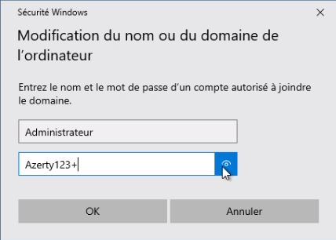

Serveur Exchange 2019
Objectif et environnement
Objectif
L’installation d’un serveur exchange 2019.
Environnement
Matériels :
Dell PowerEdge r240 avec Proxmox 7.1-7
Adressage des VMS :
Réseaux : 172.16.0.0/16
Serveur Samba et impression : SRV-W19-EXC 172.28.1.201/16
Client Debian 1 : clideb1 172.16.2.1/16
Documentation
Processus
Configuration deuxième contrôleur de domaine
Fixer l’adresse IP
Entrer le serveur dans le domaine

Installation Microsoft Exchange
Prérequis
Installation Microsoft Visual C++ 2013
Installation des fonctionnalités sur Windows serveur
Exécuter la commande suivante en Powershell
Install-WindowsFeature Server-Media-Foundation,
NET-Framework-45-Features, RPC-over-HTTP-proxy, RSAT-Clustering,
RSAT-Clustering-CmdInterface, RSAT-Clustering-Mgmt,
RSAT-Clustering-PowerShell, WAS-Process-Model, Web-Asp-Net45,
Web-Basic-Auth, Web-Client-Auth, Web-Digest-Auth, Web-Dir-Browsing,
Web-Dyn-Compression, Web-Http-Errors, Web-Http-Logging,
Web-Http-Redirect, Web-Http-Tracing, Web-ISAPI-Ext, Web-ISAPI-Filter,
Web-Lgcy-Mgmt-Console, Web-Metabase, Web-Mgmt-Console, Web-Mgmt-Service,
Web-Net-Ext45, Web-Request-Monitor, Web-Server, Web-Stat-Compression,
Web-Static-Content, Web-Windows-Auth, Web-WMI,
Windows-Identity-Foundation, RSAT-ADDS
Installation Microsoft Exchange ISO
Exécution Setup an tant Administrateur

Installation complémentaire des prérequis nécessaires :
.Net Framework 4.8
Microsoft Unified Communications Managed API 4.0, Core Runtime 64-Bit
URL Rewrite (module de réécriture d’URL IIS)
Configuration du serveur
Configuration langue et l’heure
Créer une boite à lettre
Parcourir
Configurer Outlook
Ouvrir application Outlook
Choix exchange
J’ai installé les certificats
J’ai envoyé un message test entre deux compte Outlook
L’échange de mail fonctionne correctement.
Accès à Webmail
Je me suis rendu avec le client linux sur l’adresse https://srv-w19-exc/owa/
Un fois les accès renseignés, j’accède aux mails
Configuration la messagerie avec Thunderbird
Tout d’abords il faut démarrer et laisser en mode automatique le service IMAP4 sur le serveur exchange
Les paramètres de ma configuration
Puis configuration manuelle
Puis cliqué sur terminer
J’ai confirmé l’exception de sécurité
Thunderbird est ainsi configuré.
Conclusion
Le serveur de messagerie est fonctionnel, néanmoins Thunderbird ne récupère pas automatiquement le carnet d’adresse. Ils existent des solutions payantes comme ExQuilla for Microsoft Echange plugin pour pallier ce problème.